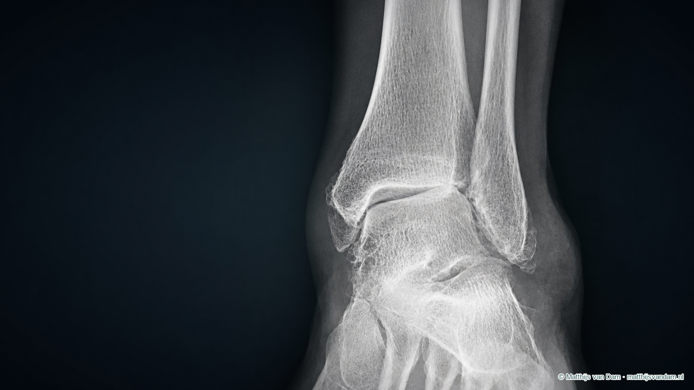

Wat is een enkelartrodese?
De enkel wordt ook het bovenste spronggewricht genoemd. Het scheenbeen en kuitbeen vormen samen een enkelvork rond het sprongbeen. Bij artrose is het gladde kraakbeen in dit gewricht beschadigd. Bewegen en belasten kan daardoor pijnlijk worden en de enkel kan stijf, instabiel of scheef komen te staan.
Bij een enkelartrodese verwijdert de chirurg het resterende beschadigde kraakbeen. De botvlakken van scheenbeen en sprongbeen worden zo voorbereid dat ze tegen elkaar kunnen vastgroeien. Schroeven, een plaat of soms een andere vorm van fixatie houdt de enkel in de gekozen stand terwijl het lichaam een botverbinding vormt. Het metaal zorgt dus voor tijdelijke en blijvende stevigheid, maar het doel van de operatie is dat de botten zelf één geheel worden.
De operatie verwijdert geen pijn uit pezen, zenuwen of andere gewrichten. Ook wordt de enkel niet weer normaal. Het doel is een stabiele, zo functioneel mogelijk geplaatste voet en minder pijn uit het gewricht dat wordt vastgezet.
Wanneer komt een enkelartrodese in beeld?
Een enkelartrodese wordt meestal pas besproken bij vergevorderde artrose van het bovenste spronggewricht. De klachten moeten daarbij passen bij wat bij onderzoek en op foto's wordt gezien. Voorbeelden zijn een sterk beperkte loopafstand, pijn bij staan of lopen, nachtelijke pijn of moeite met werk en dagelijkse activiteiten ondanks passende niet-operatieve zorg.
Voor een operatie kunnen onder meer aanpassing van belasting, een brace, schoenaanpassing, fysiotherapie, pijnstilling via de eigen behandelaar en soms een injectie worden overwogen. Welke maatregel zinvol is, hangt af van oorzaak, stand en klachten. Meer hierover staat op de pagina over niet-operatieve zorg bij enkelartrose.
Een slechte röntgenfoto alleen is geen reden om te opereren. Eerst moet aannemelijk zijn dat juist dit gewricht de belangrijkste pijnbron is en dat de mogelijke winst opweegt tegen een langdurige herstelperiode, verlies van beweging en operatierisico's.
Na een geslaagde enkelartrodese kan het bovenste spronggewricht niet opnieuw beweeglijk worden gemaakt zonder een nieuwe en complexe reconstructie. Verwachtingen over lopen, werk, sport en schoenen horen daarom vóór de operatie concreet te worden besproken.
Welke beoordeling en beeldvorming zijn nodig?
Het gesprek begint bij de plek en het patroon van de pijn, eerdere breuken of operaties, de mate van stijfheid en wat iemand in het dagelijks leven niet meer kan. Bij lichamelijk onderzoek worden onder meer stand, stabiliteit, huid, doorbloeding, gevoel, pezen en de beweging van aangrenzende gewrichten beoordeeld.
Staande röntgenfoto's zijn meestal het uitgangspunt. Zij laten de gewrichtsspleet, extra botvorming en de stand van de enkel onder belasting zien. Foto's van de voet of achtervoet kunnen nodig zijn om de hele uitlijning en omliggende gewrichten te beoordelen. Een CT-scan kan aanvullende informatie geven over botverlies, cysten, oude breuken, eerdere implantaten en de driedimensionale stand. Een MRI-scan is niet standaard nodig voor iedere enkelartrodese, maar kan worden gebruikt als ook pezen, kraakbeenletsels of andere pijnbronnen moeten worden onderzocht.

Wat bepaalt of een enkelartrodese kan passen?
De afweging gaat verder dan leeftijd of de ernst van de foto. De volgende factoren beïnvloeden zowel de keuze als de techniek, de kans op botgroei en het uiteindelijke functioneren.
De pijn moet vooral uit het bovenste spronggewricht komen en passen bij gevorderde schade. Andere pijnbronnen kunnen na de operatie blijven bestaan.
Een scheefstand of instabiliteit moet bij de planning worden meegenomen. Soms zijn aanvullende bot- of peescorrecties nodig.
De beweeglijkheid en eventuele artrose van de achtervoet en middenvoet bepalen hoeveel compensatie na het vastzetten mogelijk is.
Botkwaliteit, botverlies, oude breuken, infecties en eerder geplaatst materiaal beïnvloeden techniek en kans op vastgroeien.
Littekens, dunne huid, gevoelsverlies en vaatproblemen kunnen wondgenezing en veiligheid beïnvloeden.
Onder meer roken, diabetes, medicatie, voedingstoestand, valrisico en de mogelijkheid om wekenlang beperkt te belasten wegen mee.
Roken verdient bijzondere aandacht. Een systematische review naar enkelartrodese vond roken als duidelijke risicofactor voor niet-vastgroeien. Stoppen rond de operatie kan daarom een voorwaarde zijn binnen het behandelbeleid. Wat in een individuele situatie nodig is, moet met het behandelteam worden afgestemd.
Welke beweging verdwijnt en welke beweging blijft?
Het bovenste spronggewricht zorgt vooral voor het omhoog en omlaag bewegen van de voet ten opzichte van het onderbeen. Na een artrodese verdwijnt die beweging in het vastgezette gewricht. De voet wordt daarbij niet als geheel onbeweeglijk: de gewrichten onder de enkel, in de middenvoet en voorvoet blijven voor zover zij gezond zijn bewegen. Ook knie, heup en tenen blijven meedoen.
Daardoor kunnen veel mensen na herstel weer lopen en fietsen, maar de manier van afwikkelen verandert. Een kleinere pas, een afwikkelzool of een schoenaanpassing kan soms helpen. Oneffen terrein, hellingen, traplopen, hurken en activiteiten waarbij veel enkelbuiging nodig is kunnen lastiger blijven. Hoe groot het verschil wordt, hangt ook af van hoeveel beweging vóór de operatie nog over was. Een enkel die door artrose al vrijwel stijf was, verliest praktisch minder beweging dan een nog redelijk beweeglijke enkel.
Gangbeeldonderzoek laat zien dat zowel een enkelartrodese als een enkelprothese het lopen kan verbeteren, maar dat geen van beide een normaal bewegingspatroon garandeert. De beschikbare studies zijn klein en verschillen in meetmethode, patiëntselectie en follow-up. Persoonlijke voorspellingen blijven daardoor onzeker.
Enkelartrodese of enkelprothese?
Bij eindstadium enkelartrose zijn een artrodese en een enkelprothese twee verschillende manieren om het pijnlijke gewricht te behandelen. Een artrodese maakt een botverbinding en offert de beweging van het gewricht op. Een prothese vervangt de gewrichtsoppervlakken en probeert een deel van de beweging te behouden, maar kan slijten, loslaten of later een revisie vragen.
| Onderwerp | Enkelartrodese | Enkelprothese |
|---|---|---|
| Hoofddoel | Pijn verminderen door het gewricht in een functionele stand te laten vastgroeien. | Pijn verminderen en een deel van de beweging in het gewricht behouden. |
| Beweging | Geen beweging meer in het bovenste spronggewricht; omliggende gewrichten blijven meedoen. | Een deel van de enkelbeweging kan blijven, maar de enkel wordt niet normaal. |
| Belangrijk specifiek risico | Niet-vastgroeien of vastgroeien in een ongunstige stand. | Slijtage, loslating of problemen met onderdelen van de prothese. |
| Lange termijn | Geen protheseslijtage, maar veranderde belasting van omliggende gewrichten kan een rol spelen. | Behoud van beweging kan gunstig zijn voor omliggende gewrichten, maar revisie kan nodig worden. |
De AAOS-richtlijn uit 2026 spreekt geen algemene voorkeur uit. Bij eindstadium enkelartrose na onvoldoende effect van niet-operatieve zorg kunnen beide behandelingen patiëntgerapporteerde uitkomsten verbeteren; de bewijskracht om voor iedereen één behandeling aan te wijzen is beperkt.
In de gerandomiseerde TARVA-studie verbeterden zowel enkelprothese als artrodese het lopen en de kwaliteit van leven na één jaar. Voor de primaire uitkomst werd geen statistisch overtuigend verschil tussen beide groepen aangetoond. De studie betrof mensen van 50 tot 85 jaar die voor beide operaties geschikt waren en geeft dus geen antwoord voor iedere patiënt of voor de uitkomst na vele jaren.
Open of via een kijkoperatie?
Een enkelartrodese kan via een open operatie of via een kijkoperatie (artroscopie) worden uitgevoerd. Bij een artroscopische techniek brengt de chirurg via kleine openingen een camera en instrumenten in het gewricht. Het kraakbeen wordt verwijderd en de enkel wordt meestal met schroeven gefixeerd. Deze techniek kan passen wanneer de stand redelijk behouden is en geen grote correctie nodig is.
Een open benadering geeft meer toegang tot het gewricht en kan nodig zijn bij een forse scheefstand, botverlies, eerdere operaties of wanneer ook andere correcties moeten worden uitgevoerd. Soms wordt daarbij het kuitbeen benaderd of gebruikt als onderdeel van de reconstructie. De keuze voor open of artroscopisch is geen kwaliteitsranglijst; anatomie, correctiebehoefte en ervaring van het team zijn bepalend.
Hoe verloopt de operatie in hoofdlijnen?
-
Voorbereiden en positioneren
Het operatieteam controleert zijde, verdoving, huid en planning. Antibiotica en maatregelen tegen trombose worden volgens het lokale protocol gegeven.
-
Gewricht voorbereiden
Het beschadigde kraakbeen wordt verwijderd en de botvlakken worden voorbereid om botgroei mogelijk te maken.
-
Stand bepalen
De voet wordt in een functionele stand geplaatst. Voor-achterwaartse stand, zijdelingse stand en rotatie zijn daarbij belangrijk.
-
Fixeren
Schroeven, een plaat of soms een pen houden de botten tegen elkaar. Röntgenbeelden tijdens de operatie helpen stand en materiaalpositie te controleren.
-
Beschermen
Na het sluiten van de wond volgt meestal gips, een spalk of later een afneembare walker. De botverbinding moet vervolgens in de maanden erna ontstaan.
Soms wordt eigen bot, donorbot of een botvervangend materiaal toegevoegd, bijvoorbeeld bij een botdefect of verhoogd risico op onvoldoende botcontact. Het bewijs voor de beste aanvullende botstimulerende techniek is beperkt en wisselend; het gebruik daarvan is geen standaardgarantie op vastgroeien.
Waarom verschillen gips- en belastingsschema's per ziekenhuis?
Nederlandse ziekenhuisinformatie laat verschillende schema's zien. Sommige centra beschrijven eerst ongeveer zes weken onbelast gips en daarna zes weken loopgips; andere gebruiken in totaal ongeveer tien weken of passen eerder een walker toe. Ook de duur van tromboseprofylaxe, fysiotherapie en het moment van controlefoto's verschillen.
Dat verschil kan samenhangen met operatietechniek, kwaliteit van de fixatie, botkwaliteit, aanvullende correcties, wondgenezing en lokaal beleid. Een algemeen internetschema mag daarom nooit het persoonlijke voorschrift vervangen. Te vroeg belasten kan de botgroei of stand bedreigen; te lang volledig ontzien heeft ook nadelen voor spierkracht, conditie en zelfstandigheid.
Vraag bij onduidelijkheid aan het eigen behandelteam hoeveel gewicht op het been mag, welk hulpmiddel nodig is en wanneer het schema verandert. Verander dit niet zelfstandig op basis van een andere folder.
Hoe ziet herstel er realistisch uit?
Wondherstel, pijnstilling, hooghouden en veilig verplaatsen staan centraal. De meeste protocollen staan nog geen belasting toe. Hulp thuis is vaak nodig.
Meestal volgt wondcontrole en zo nodig hechtingen verwijderen of gips wisselen. Zwelling en afhankelijkheid van krukken of rolstoel zijn normaal in deze fase.
Op basis van wond, foto's en operatietechniek kan belasting soms worden opgebouwd in loopgips of walker. Het exacte moment verschilt per patiënt en centrum.
Lopen en dagelijkse activiteiten worden verder opgebouwd. De voet kan nog dik, stijf, gevoelig en snel vermoeid zijn; passend schoeisel kan tijdelijk lastig zijn.
Kracht, balans, looppatroon en belastbaarheid kunnen nog verbeteren. Restzwelling, schoenbehoefte of beperkingen op oneffen terrein kunnen blijven.
Herstel verloopt niet als een rechte lijn. Meer activiteit kan tijdelijk meer zwelling of gevoeligheid geven. Ook een technisch vastgegroeide enkel kan nog pijn doen door littekenweefsel, implantaten, pezen, zenuwen of omliggende gewrichten. “Vastgegroeid” en “volledig hersteld” zijn daarom niet hetzelfde.
Hoe wordt beoordeeld of de enkel is vastgegroeid?
De chirurg combineert klachten, onderzoek en beeldvorming. Op röntgenfoto's wordt gekeken naar botbruggen, stand en het materiaal. De beoordeling op gewone foto's is niet altijd eenvoudig. Een zichtbare lijn in het gewricht betekent niet automatisch dat er geen stevige verbinding is, terwijl weinig pijn niet altijd bewijst dat de artrodese volledig is vastgegroeid.
Bij twijfel, aanhoudende pijn of planning van een nieuwe ingreep kan een CT-scan meer detail geven. CT is gevoeliger, maar ook de definitie van voldoende botbrug verschilt tussen onderzoeken en ziekenhuizen. Daarom lopen gepubliceerde percentages over vastgroeien uiteen. Een systematische review met CT-controle vond lagere fusiepercentages dan oudere studies die vooral röntgenfoto's gebruikten; die cijfers betroffen bovendien verschillende gewrichten en technieken en zijn niet één-op-één op iedere enkelartrodese toepasbaar.
Welke risico's horen bij een enkelartrodese?
Iedere operatie kent algemene risico's, zoals wondproblemen, infectie, nabloeding, trombose of longembolie, zenuwirritatie, gevoelsverandering en problemen rond verdoving. Specifiek bij een enkelartrodese kan de botverbinding onvoldoende ontstaan, kan de enkel in een ongunstige stand vastgroeien of kan het materiaal irriteren of breken.
In de TARVA-studie was na één jaar op gewone röntgenfoto's bij 12,1% van de artrodesegroep geen volledige botverbinding gezien; 7,1% van de groep had daarbij klachten. Dat is één studie met een specifieke populatie, technieken en follow-up en dus geen persoonlijke voorspelling. Andere reviews rapporteren andere percentages, mede door verschillen in gewricht, beeldvorming en definitie.
Op langere termijn kunnen de gewrichten onder en voor de enkel meer of anders worden belast. Op foto's wordt bij sommige mensen artrose in die gewrichten gezien, maar het is niet altijd duidelijk welk deel al vóór de operatie aanwezig was en hoe vaak radiologische veranderingen werkelijk klachten geven. Het is daarom te stellig om te zeggen dat iedere artrodese onvermijdelijk omliggende gewrichten beschadigt.
Zeldzamere problemen zijn een complex regionaal pijnsyndroom, een diepe infectie, vaat- of zenuwletsel en een breuk rond het fixatiemateriaal. Een nieuwe operatie kan nodig zijn bij infectie, hinderlijk materiaal, standsproblemen, niet-vastgroeien of pijnlijke artrose van aangrenzende gewrichten.
Wat als de enkel niet of niet goed vastgroeit?
Niet-vastgroeien wordt pseudoartrose of nonunion genoemd. Dit kan klachten geven bij belasten, zwelling, instabiliteitsgevoel of pijn rond het materiaal, maar sommige onvolledige botverbindingen geven weinig klachten. Eerst wordt onderzocht of de pijn inderdaad door de botverbinding komt en of er andere oorzaken zijn, zoals infectie, stand, pezen, zenuwen of aangrenzende gewrichten.
De behandeling kan variëren van langer beschermen en risicofactoren aanpakken tot een nieuwe operatie. Bij een revisie kunnen oud materiaal, littekenweefsel en onvoldoende vitaal bot worden verwijderd, de stand worden gecorrigeerd en nieuwe fixatie of bottransplantatie worden gebruikt. Meer algemene informatie staat op de lokale conceptpagina over revisie na een artrodese.
Werk, autorijden, schoenen en sport
Terugkeer naar werk hangt af van de mogelijkheid om het been hoog te leggen, vervoer en de lichamelijke belasting. Beeldschermwerk thuis kan soms eerder worden hervat dan werk met lang staan, veel lopen, klimmen, tillen of werken op ongelijke ondergrond. Een vaste termijn op internet is geen persoonlijk werkadvies.
Autorijden kan pas wanneer iemand zonder gips of walker veilig en krachtig een noodstop kan maken, geen medicatie gebruikt die rijden onveilig maakt en het behandeladvies en de verzekeringsvoorwaarden dit toelaten. Bij een operatie aan de rechterenkel is dit doorgaans later dan bij links in een auto met automatische transmissie.
Schoenen met een stabiele zool en goede afwikkeling kunnen comfortabeler zijn; soms is een afwikkelvoorziening of maatwerk nodig. Wandelen, fietsen en zwemmen kunnen na herstel vaak weer mogelijk zijn, maar afstand, tempo en terrein verschillen per persoon. Hardlopen, springen, contactsport en zwaar lichamelijk werk vragen een aparte afweging vanwege schokbelasting en de veranderde beweging. De operatie wordt niet uitgevoerd om onbeperkte sport te garanderen.
Vragen om met de orthopedisch chirurg te bespreken
Deze vragen kunnen helpen om keuze, herstel en onzekerheden concreet te maken:
- Waarom denkt u dat mijn pijn vooral uit het bovenste spronggewricht komt?
- Welke niet-operatieve mogelijkheden zijn nog zinvol en wat is het gevolg als ik niet opereer?
- Waarom past in mijn situatie een artrodese beter of minder goed dan een enkelprothese?
- Is een kijkoperatie mogelijk of is een open correctie nodig, en waarom?
- Welke stand wordt nagestreefd en zijn aanvullende bot- of peescorrecties nodig?
- Wat is mijn persoonlijke risico op niet-vastgroeien en wat kan ik vóór de operatie verbeteren?
- Wat is het exacte gips-, belastings-, trombose- en controleschema?
- Wat mag ik realistisch verwachten van lopen, schoenen, werk, autorijden en sport?
- Hoe wordt botgroei beoordeeld en wat zijn de mogelijkheden als de artrodese niet vastgroeit?
Waar kan je terecht met persoonlijke vragen?
Ik heb deze pagina geschreven als algemene oriëntatie voor mensen die zich willen inlezen over een enkelartrodese. Het is geen officiële ziekenhuisfolder. Persoonlijke vragen over klachten, beeldvorming, geschiktheid en behandelkeuze bespreek je met de behandelend orthopedisch chirurg. Voor afspraken, uitslagen, wondvragen en instructies na een operatie zijn de officiële kanalen van het eigen behandelteam leidend.
Neem na een operatie dezelfde dag contact op met het eigen behandelteam bij koorts, toenemende roodheid of wondlekkage, een knellend gips, een koude of blauwe voet, nieuwe gevoelsstoornissen, plotselinge forse zwelling of snel toenemende pijn. Volg buiten openingstijden de meegegeven ziekenhuisinstructies. Bel 112 bij een levensbedreigende situatie.
Bronnen
- Goldberg AJ, Chowdhury K, Bordea E, et al. Total ankle replacement versus arthrodesis for end-stage ankle osteoarthritis: a randomized controlled trial. Ann Intern Med. 2022;175(12):1648-1657.
- Gajebasia S, Jennison T, Blackstone J, Zaidi R, Muller P, Goldberg A. Patient reported outcome measures in ankle replacement versus ankle arthrodesis: a systematic review. Foot (Edinb). 2022;51:101874.
- Patel S, Baker L, Perez J, Vulcano E, Kaplan J, Aiyer A. Risk factors for nonunion following ankle arthrodesis: a systematic review and meta-analysis. Foot Ankle Spec. 2023;16(1):60-77.
- Leslie MD, Schindler C, Rooke GJ, Dodd A. CT-verified union rate following arthrodesis of ankle, hindfoot, or midfoot: a systematic review. Foot Ankle Int. 2023;44(7):665-674.
- Deleu PA, Besse JL, Naaim A, et al. Change in gait biomechanics after total ankle replacement and ankle arthrodesis: a systematic review and meta-analysis. Clin Biomech (Bristol). 2020;73:213-225.
- Ling JS, Smyth NA, Fraser EJ, et al. Investigating the relationship between ankle arthrodesis and adjacent-joint arthritis in the hindfoot: a systematic review. J Bone Joint Surg Am. 2015;97(6):513-520.
- Greer N, Yoon P, Majeski B, Wilt TJ. Orthobiologics in foot and ankle arthrodesis: a systematic review. J Foot Ankle Surg. 2021;60(5):1029-1037.
- American Academy of Orthopaedic Surgeons. Management of ankle osteoarthritis: evidence-based clinical practice guideline. AAOS; 2026.
- Elisabeth-TweeSteden Ziekenhuis. Enkelartrodese. ETZ; 2025.
- Maastricht UMC+. Enkelgewricht vastzetten: operatief vastzetten van het enkelgewricht (enkelartrodese). Maastricht UMC+.
- Sint Maartenskliniek. Vastzetten enkelgewricht. Sint Maartenskliniek.
- Deventer Ziekenhuis. Enkelarthrodese (vastzetten van de enkel). Deventer Ziekenhuis.
- Amphia Ziekenhuis. Artrodese van de enkel. Amphia.
- Flevoziekenhuis. Het vastzetten van het enkelgewricht (artrodese). Flevoziekenhuis.